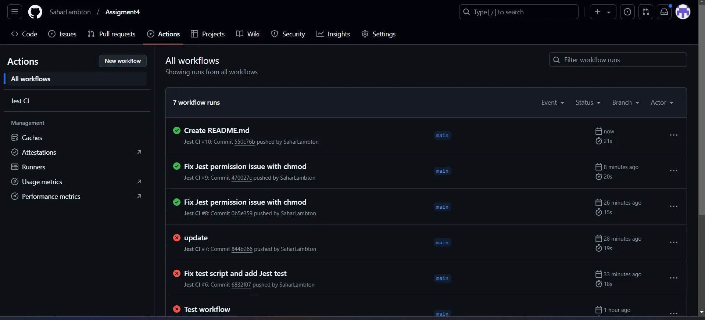

El pipeline
- Se activa con cada push a main
- Servidor Ubuntu con Node.js 16
- Instala dependencias y da permisos a Jest
- Ejecuta las pruebas y avisa si todo pasó
PROGRAMACIÓN · DEVOPS · CI
Integración continua: cada cambio que llega a main ejecuta las pruebas solo, con GitHub Actions.

JEST CI · 11 / 13// 01 · LA MISIÓN
Configuré la integración continua de un proyecto JavaScript: cada vez que un cambio llega a la rama main, GitHub Actions prepara un servidor, instala el proyecto y ejecuta las pruebas con Jest. El historial muestra el proceso real: los primeros intentos fallaron, encontré la causa y desde entonces cada cambio se prueba solo.
// QUÉ SE CONSTRUYÓ
// RETOS Y SOLUCIONES
El ejecutable de Jest no tenía permisos en el servidor de GitHub Actions. Agregué un paso que se los da (chmod +x) antes de correr las pruebas, y el workflow pasó a verde.
// PRUEBAS
$ npm test > assigment4@1.0.0 test > jest PASS __tests__/example.test.js ✓ adds 1 + 2 to equal 3 (4 ms) ✓ subtracts 5 - 2 to equal 3 (1 ms) Test Suites: 1 passed, 1 total Tests: 2 passed, 2 total
// GALERÍA
Toca una imagen para verla en pantalla completa.
MISIÓN CUMPLIDA
¿Quieres que tu equipo deje de probar a mano?
Automatizo pruebas y despliegues para que cada cambio sea seguro.